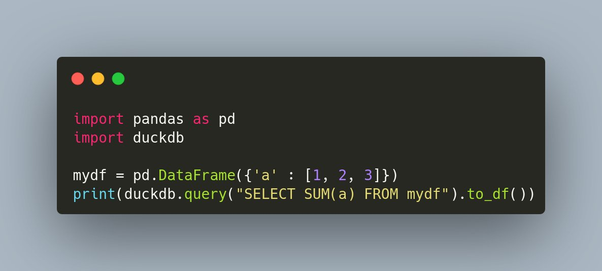

Automatic venv activation! https://github.com/direnv/direnv/wiki/Python
Fascinating fact: I have a newsletter on @SubstackInc and some subscribers are using https://kill-the-newsletter.com/, which "converts newsletters into Atom feeds".
...but Substack provides RSS, right there. No excerpts: the full text.
Do folks even know how to use feed readers? @feedly
Replying to @pradyunsg and @willmcgugan
I have a draft locally but haven't pushed yet, in case you want to lower this on your to-do list :)
Replying to @pradyunsg and @willmcgugan
(When I said "we", I meant it for real!)
RT @anacondainc: The @condaproject is now on Twitter, and in case you didn't know, #conda is not our nickname. 😉
@condaproject will be ou…
First @orchestofficial monthly newsletter written by yours truly 🤓 (previous ones courtesy of @RickLamers 🙌) https://twitter.com/orchestofficial/status/1498692403900805123
Replying to @perezjotaeme
Se están viendo restricciones similares por parte de Google, por ejemplo https://twitter.com/JakeMillerTech/status/1368259602349981697
Si están valorando alternativas a Colab, @arielsilvionr de @PythonArgentina está trabajando en montar servidores de JupyterHub. cc @ScipyLA
También existe @2i2c_org
@perezjotaeme Por cierto, acabo de conocer https://github.com/pysentimiento/pysentimiento, espectacular! Lo anoto para la próxima edición de https://astrojuanlu.substack.com/
Qué interesante esto de @jdelacueva: "las Constituciones están escritas en un lenguaje natural, pero actualmente [...] los Estados se están reescribiendo en un lenguaje formal"
Para reflexionar. https://twitter.com/civio/status/1498579243730714633
Cool interview! Some takeaways:
💡When the lineage gets too long, errors appear and checkpointing is necessary
💡Inconsistencies between pandas and Spark: sorting nulls, grouping nulls
💡Some functionality is hard to replicate in a distributed setting: median, transpose, indexes https://twitter.com/DataEngPodcast/status/1495606394539712512
Replying to @DanWos
cc @readthedocs @reydelhumo
Just discovered @AirbyteHQ while looking for open source alternatives to @fivetran and it looks so cool. However, I'm wondering if connectors like that exist in the form of standalone functions or processes that can be reused more easily (and don't need a full k8s deployment 🤔)
JupyterLab 3.3.0 is out 🎉
One of the highlights is the new settings UI 😠And there are other cool improvements, like a progress indicator for cell execution, a keyboard shortcut to toggle side-by-side rendering, and more.
pip install jupyterlab==3.3.0
https://jupyterlab.readthedocs.io/en/3.3.x/getting_started/changelog.html
Replying to @juanluisback
Looking forward to seeing the new version integrated in @orchestofficial! 🙌
Joined Twitter 1 year ago, after joining, quitting, and re-joining a few times. This account is only a projection of my analog self. I will not give up my digital identity to a for-profit company. I'm a multifaceted human that dwells in the real world 😉 #MyTwitterAnniversary
Replying to @muheuenga, @evildmp, @drvinceknight, @NikoletaGlyn, @GeraintPalmer, @loekvangent and @PyConNA
Missing you all folks 💔
Replying to @muheuenga, @evildmp, @drvinceknight, @NikoletaGlyn, @GeraintPalmer, @loekvangent and @PyConNA
I had forgotten! Crazy times, so far away from home and everything I ever saw... and yet I had so much fun and met so many kind folks. Hope to meet in person again soon
RT @jtpio: JupyterLab 3.3.0 is released! 🎉
- Install with: pip install jupyterlab==3.3.0
- Release notes: https://github.com/jupyterlab/jupyterlab/releases/tag/v3.3.0
- Discou…
RT @AgencyCecil: @ericholscher and I started a new podcast called "Let's Talk Docs."
Who educates the developer?
#letstalkdocs explores t…
RT @PyCampES: ¡Gracias @python_es por ayudarnos (entre muchas otras cosas) a difundir el evento! ¡Quedó buenÃsima la presentación en su web…
Looks like I might land my first non-trivial contribution to pip? 🤓 https://github.com/pypa/pip/pull/10937
RT @dstufft: @brettsky We’re also honestly solving a fundamentally harder problem than most of them. How many of them are trying to build a…
A thousand times this 👇 https://twitter.com/dstufft/status/1499884255870177281
Replying to @helge_e
I know package management is a wicked problem for everybody, and for that reason I have muted a few "python sucks, check out julia which will solve cancer, climate change, and world peace" accounts. Not judging, it's just that I don't want this tone on my timeline.
Replying to @helge_e
Don't get me wrong, I'm all for cross-ecosystem knowledge sharing. binarybuilder looks cool. We are already using DifEqs.jl in SciPy to add new methods.
But if we are to talk about unhelpful comparisons on social media, let's just politely say that we can collectively do better.
"Codd's twelve rules are a set of thirteen rules"
Monday 09:00, Slack reminder time
RT @jbhuang0604: Writing tip:
Your model won't magically "get trained".
Your figure won't magically "as can be seen".
Your data won't m…
I'm cursing conda and loving mamba once more. However, now that @condaproject will ship experimental integration with libmamba and is transitioning to be a community project, what can users expect from mamba in the future? https://twitter.com/martinRenou/status/1450027011691491330
Replying to @juanluisback
...I guess we'll find out soon? :) https://twitter.com/condaproject/status/1500852521538965506
RT @dev_events: 🆕 PyCamp España
ℹ️ Python conference
🇪🇸 Girona, Spain
🗓 April 15-18 2022
💰 PAID
❤️ Retweet to support! @PyCampES
More inf…
tomllib has just been merged to CPython ğŸ˜
very soon:
import tomllib
with open("pyproject.toml", "rb") as f:
data = tomllib.load(f)
RT @poliastro_py: Libre Space Foundation @LibreSpace_Fnd, our umbrella organization for Google Summer of Code, has informed us that they ha…
RT @bastianventhur: Now we can finally parse pyproject.toml without external dependencies!
Replying to @eramirem
An interesting confusion matrix
"Our mission is to organize the world’s information in the cheapest and sloppiest possible way" https://twitter.com/tdverstynen/status/1501386481415434245
RT @PyCampES: Weeee, ¡estamos en @readthedocs! 🥰
There's a whole industry now about dunking Python on Medium and other blog platforms, possibly because contrarian viewpoints salted with clickbaity titles drive clicks and therefore revenue.
We can't really stop it, so let's just accept it as the natural state of things! https://twitter.com/wesmckinn/status/1501709603414937607
Replying to @yuvipanda
MY BRAIN HURTS
RT @anthonypjshaw: Today I wanted to see if I could make my FastAPI application faster by running it on PyPy. The result? It was 3-4x faste…
Replying to @ericholscher
“There are only two kinds of languages: the ones people complain about and the ones nobody uses.”
― Bjarne Stroustrup
Noticias sobre Python cientÃfico de la semana, episodio 25 🐍⚙️🎉
Edición especial para celebrar los 25 episodios, con extra de enlaces y animaciones. ¡Gracias por apoyar el noticiero! 🥂
https://astrojuanlu.substack.com/p/episodio-25
Novedades 👇
Replying to @juanluisback
📣 Queda un mes para @PyCampES, un evento con muchÃsima trayectoria en Argentina y que por fin se hace en mi paÃs natal: 4 dÃas, pensión completa en una casa rural maravillosa, diversión, buena compañÃa, y mucho Python. ¡AnÃmate!
Replying to @juanluisback
¡Y más! La semana que viene es el primer hackathon de Procesamiento del Lenguaje Natural en español, organizado por @SomosNLP_. Si te interesa participar pero no sabes nada de PLN, echa un vistazo a su curso “NLP de cero a cien”:
https://somosnlp.org/nlp-de-cero-a-cien
Replying to @juanluisback
🚀 ¡conda 4.12.0 trae mejoras muy jugosas! La principal es --experimental-solver=libmamba, que hará las instalaciones mucho más rápidas. También hay algunos arreglos en conda run, que permite ejecutar comandos de entornos conda sin activarlos primero.
https://twitter.com/condaproject/status/1500852521538965506
Replying to @juanluisback
🔥 JupyterLite nos sigue dejando boquiabiertos. ¡Ahora podemos hasta visualizar modelos 3D de VTK!
https://twitter.com/jtpio/status/1501536729265750020
Replying to @juanluisback
Disponible xarray-sentinel 0.4, para poder acceder a imágenes SAR (radar de apertura sintética) desde xarray.
https://twitter.com/alexamici/status/1501116415079813122
Replying to @juanluisback
Ya se está usando en la página principal de Jupyter para ofrecer un editor de Python en el navegador que no requiere conexión a un servidor:
https://twitter.com/jtpio/status/1501536729265750020
Estamos asistiendo al inicio de la edad de oro de Python en el navegador. ¡Esto no ha hecho nada más que empezar!
Replying to @juanluisback
Se acaba de anunciar la primera versión de geoparquet, una extensión de Parquet que incluye primitivas geométricas (puntos, lÃneas y polÃgonos). ¿Por fin veremos el fin de los infames Shapefiles?
https://twitter.com/opencholmes/status/1501943859281948680
Replying to @juanluisback
💡 Esta semana he hecho varios descubrimientos interesantes:
@DuckDB permite ejecutar SQL sobre un dataframe de pandas, archivos CSV o Parquet, y más. Piénsalo como un SQLite para analÃtica. ¡Lo he probado y me han dado ganas de aprender SQL en serio!

Replying to @juanluisback
Y por último, Pingouin ofrece, *por fin*, una biblioteca estadÃstica fácil de usar y entender. Por debajo utiliza SciPy y statsmodels.
Replying to @juanluisback
📚 Esta semana he estado estudiando Apache Arrow como loco para un artÃculo que voy a publicar en el blog de @orchestofficial. De la docena de textos que he leÃdo me quedo con estos dos de @wesmckinn, creador de pandas y co-creador de Arrow:
Replying to @juanluisback
“las 10 cosas que odio de pandas†(2017) https://wesmckinney.com/blog/apache-arrow-pandas-internals/ y esta comparativa entre Feather y Parquet con y sin compresión de 2020 https://ursalabs.org/blog/2020-feather-v2/ (spoiler: están muy igualados pero gana Feather V2 en velocidad)
Replying to @juanluisback
Por otro lado, me ha encantado este artÃculo sobre cómo crear animaciones matemáticas como las del YouTuber 3Blue1Brown usando Python:
https://towardsdatascience.com/how-to-create-mathematical-animations-like-3blue1brown-using-python-f571fb9da3d1
Replying to @juanluisback
¡Y eso es todo! Apoya el noticiero suscribiéndote por correo o RSS en https://astrojuanlu.substack.com/p/episodio-25
¡Hasta la próxima semana! 👋
Replying to @juanluisback
💼 NVIDIA busca PyData Open Source Developer para RAPIDS, remoto dentro de EEUU, 169 200 - 232 650 USD.
https://nvidia.wd5.myworkdayjobs.com/NVIDIAExternalCareerSite/job/US-CA-Remote/Senior-Software-Engineer--PyData-Open-Source-Developer---RAPIDS_JR1954810
RT @SomosNLP_: ¡Animamos a todo el mundo a participar!
Pondremos a vuestra disposición recursos (http://somosnlp.org/recursos) y os guiaremos…
On Wednesday I had a very nebulous idea of what @ApacheArrow was.
Today I have just read a memory-mapped CSV file by batches and my mind is blown 🤯
Keep an eye on the @orchestofficial blog next week ✍️
Replying to @lucciaaaa_ and @Stefanypowers
Puf qué temazos, yo también necesito la playlist completa 🔥🔥🔥🔥🔥
Replying to @choldgraf, @pradyunsg and @willmcgugan
Replying to @choldgraf and @2i2c_org
I was very happy with @MailerLite (déjà vu...?)
It's out! In this post I try to untangle what Arrow is in simple terms, and describe what cool things can be done with it. Took me a while to synthesize the information, so I hope you like it! 💪 https://twitter.com/orchestofficial/status/1503662926850232321
RT @lapajaraenbici: Hoy es el #DiaDelDerechoDelConsumidor.
Varios motivos para recordarlo, entre los cuales: el derecho de estar informado…
RT @PamphileRoy: PSA Please be careful about licensing when contributing to OSS. I had to reject another PR because the author looked at so…
Replying to @driscollis
Discord for communities, Slack for closed groups
@marlene_zw I just read https://marlenemhangami.com/how-i-made-my-first-pr-to-apache-arrow, thanks a lot for sharing! I might try to do it at some point myself 😊
I'm wondering what do you think of the intro to this article in terms of what Arrow is and isn't? https://twitter.com/orchestofficial/status/1503662926850232321 would love to have your feedback!
Replying to @djnavarro
Thanks a lot @djnavarro, coming from you it's an honor! I still have your epic mega post about Data Types on my reading list 🤯
Replying to @uri_herrera
Hola Uri, no te conozco personalmente pero creo que estais haciendo un gran trabajo con Nitrux.
Consejo no solicitado: Deja de perder la cabeza por cada comentario de redditors y fanboys aleatorios, este mundo está lleno de haters. Trata de proyectar energÃa positiva.
¡Saludos!
Replying to @marlene_zw
Thanks a lot for taking the time to read it, I appreciate it 🙏
Nos vemos el miércoles que viene 😠https://twitter.com/PyDataMadrid/status/1504170621139304448
Replying to @ecanrog
> y cómo hacer que las alternativas públicas a Amazon funcionen.
¿algún spoiler para quienes no podremos asistir?
Replying to @diana_aceves_
¡Por favor!
Ya está, el mejor tuit del año. Nos podemos ir a casa. https://twitter.com/PyCampES/status/1504405251205517313
Replying to @ladybenko
Anda que no he visto charlas terribles de hombres... y todavÃa ni una charla asà de mala de una mujer.
Vamos, lo que dice @flipper83 https://twitter.com/flipper83/status/1504089798633566208
RT @SciPy_team: Hello, world!
This is the official account for SciPy, the package providing fundamental algorithms for scientific computi…
Replying to @smorcuende and @inspide_me
No sabÃa que estabas en Inspide Susana, ¡me alegra ver que te está yendo bien! 😊
Replying to @smorcuende and @inspide_me
¿Datos y Python? ¿No estarás por Madrid el miércoles? 😋 https://twitter.com/PyDataMadrid/status/1504170621139304448
¡Por mi parte todo bien por suerte!
Replying to @jaime_rgp
Hi Jaime! (You're called like my younger brother ğŸ˜) this was my experience:
1. Initially `conda install -n base "conda=4.12"` did *not* install conda 4.12 🤔 the second time it did, though
👇
Replying to @jaime_rgp
2. Then I tried `--experimental-solver=libmamba` but it complained: "no module named 'conda_libmamba_solver'" âš ï¸ so I had to do `conda install -n base conda-libmamba-solver`
(I'm writing this as I find the stuff)
👇
Replying to @jaime_rgp
Now, the good news 🥠I forced a conflict:
On an environment with anaconda=2015.05, `conda update scikit-learn` needed 8 minutes to present a long conflict
On the other hand, `conda update scikit-learn --experimental-solver=libmamba` only needed 36 seconds 🎉
Very promising!
Replying to @jaime_rgp
It's still unclear to me what the evolution of mamba as a frontend is going to be. conda is transitioning to be a community project as I understand it? And it looks like the libmamba solver will become the default. So, not sure if it's wise to invest mindshare on mamba anymore ❓
Replying to @jezdez, @jaime_rgp and @wuoulf
Thanks for all the clarifications @jezdez !
RT @brunosan: Opinion why this. EO has long had huge unrealized market size. The hold up is not more sats or res, which clutter pitch decks…
RT @marlene_zw: I've gained a lot of new followers in the past few days and just passed 6000🙈💕
Hi👋🿠I'm Marlene and I tweet about:
🐍Faste…
RT @orchestofficial: Getting ready for our presentation at @DataCouncilAI this week! Our CEO @RickLamers will give "A Quick Tour of the Orc…
Replying to @marcan42
Any benchmarks on battery life?
Replying to @emollick
Unsurprising? I'm sure US is also first in how much of the disposable income goes to college and insulin
Replying to @marcan42
Thanks a lot for the quick response!
💖 I'm sponsoring @marcan42 because I care deeply about the success of Linux on the desktop, and for that we need both integration with great hardware and good sustainability strategies. Keep up the great work! https://github.com/sponsors/marcan?sc=t&sp=astrojuanlu
RT @mesonbuild: 0.62.0 release is out, here's what's new:
https://mesonbuild.com/Release-notes-for-0-62-0.html
RT @scientific_py: Hello World! 😊
We are the Scientific Python project. This is a community effort to better coordinate and support scient…
RT @alexamici: I'm thrilled to announce the first public release of Sarsen, Open Source algorithms to process SAR satellite data in Python…
RT @timnitGebru: From 2018:
https://www.washingtonpost.com/technology/2018/12/30/fake-porn-videos-are-being-weaponized-harass-humiliate-women-everybody-is-potential-target/
“If a biologist said, ‘Here’s a really cool virus; let’s see what happens when the pu…
Replying to @pwang
Maybe @ricklamers and Yannick from @orchestofficial will land in time for some drinks :) Enjoy Data Council!
Replying to @dpp and @aevavoom
The FSF, the organization that dragged an entire generation to a "What you are referring to as Linux, is in fact, GNU/Linux" debate while both open-source (the traitors) and free/libre software (the heroes) were being weaponized by the Military-Industrial Complex.
RT @PyConES: Puesto de merchandising de la PyConES con gorritos y calcetines sà o no 🤔
RT @condaproject: Thank you to our friends over at @QuantStack for this amazing cake! Who knew integration work could be so sweet? We might…
Replying to @yuvipanda
This was a very good piece, thanks for sharing. I'm fortunate I've never felt "cancelled" IRL, but I'm starting to see this partisan use of "cancel culture" around me, especially on social media.
Moláis muy fuerte @nomedalavidadev #nomedalavidadiscord
RT @orchestofficial: And #DataCouncil is on! Tomorrow at 1:30pm CDT @RickLamers will present "A Quick Tour of the Orchest OSS project"
htt…
De camino 😠#PyDataMadrid https://twitter.com/milmadrid_/status/1506344573555118086
RT @PyDataMadrid: ¡Gracias @milmadrid_ por alojar nuestra reunión de hoy! Un lujo haber tenido a @anerodata de @civio contando proyectos de…
RT @javiyuca: Pues aquà estamos @milmadrid_ madrid #Python
Replying to @PyConES
🶠Early birds catch sleepy worms;
all jacks-in-the-green,
Botanic Man sees what must be done 🪕
https://youtu.be/AzRUrwL4Tkg
Replying to @marlene_zw and @richardpelgrim
Replying to @richardpelgrim and @marlene_zw
If you dislike my gifs or they're too cringe, you can say it, no offence! ğŸ˜
Super excited about this 😠https://twitter.com/orchestofficial/status/1507042666420314118
Replying to @AlejoHenaoR and @marlene_zw
Seguro que @SomosNLP_ saben cómo hacerlo o si ya existe :)
RT @nschloe: Congrats to the
@ThePyPA
folks for their setuptools 61 release last night! It contains one of the most anticipated features:…
Replying to @gmarkall
Same happened to me! I was super confused especially when I attempted to mix several services in the same Dockerfile, it all seemed brittle and useless. However, when I saw docker-compose, everything clicked
RT @rabernat: Cool article...but what about all the complex scientific data that can never fit into a data warehouse / SQL model? That's wh…
RT @iurytss: Thanks to all open-source projects for making our lives waaaay easier!! #oceananigans #xarray #xmovie @matplotlib @JuliusBuse…
Replying to @melissawm
Wow, congrats! 👏👏👏
Replying to @PyConES
"Las preguntas empiezan y terminan con signos de interrogación" 😉
RT @orchestofficial: We are pleased to announce a new major release of Orchest powered by Kubernetes, bringing a change that we have been w…
Hey @Twitter
Interesting old thread. Don't think much has changed in the past 1.5 years, so probably still valid, and worrying. https://twitter.com/AlvaroDeMenard/status/1304399437641461760
RT @emollick: This is a paper that both explains a lot of inequality & offers a solution. Good starts matter!
This paper gave out tiny ini…
Replying to @brianokken
I ended up abandoning it because of https://github.com/pyenv/pyenv/issues/1112
It was interfering even with my $ git commands...
Replying to @brianokken
Now my setup is pipx for "global" commands (black, tox), deadsnakes PPA to install Python versions + venv, and Ctrl+R to find the `source ... http://conda.sh` command when I needed. Not exactly user friendly but it works for me...
Replying to @AjdDavison and @ylecun
"The report of my death was an exaggeration"
—Supervised learning
If this is not an example of the dangers of laissez-faire space capitalism, I don't know what is 😉 https://twitter.com/KevinHBell/status/1508548997992095761
RT @PyDataMadrid: Avance informativo 🎙️ Nuestra reunión de abril será el jueves 28 de abril a las 19:00 en @AticcoWorkspace Madrid (calle M…
Replying to @clairebcarroll
Missing @orchestofficial there ;)
True story... but It's Complicated™ 🙃 https://twitter.com/ann_arcana/status/1508894785079238661
RT @PyCampES: Acabamos de enviar un email con información importante a todes les asistentes confirmados. Por favor, revisa tu correo para e…
Hot take: timezones aren't actually hard. But the APIs we have to interact with them can be extremely confusing at times.
Replying to @osdotsystem
How are they confusing?
Sure, they change over time and depend on the location. But I genuinely don't see how they're confusing.
"What time is it?" should be "What time is it, at this moment, on this location?".
Replying to @osdotsystem
+100 to "if the mind is fogged, so are the libs". But, we are supposed to learn from past mistakes!
The categories are well defined: tz-aware and tz-naïve. The former has a tz attached. You should be able to convert between all these, but after going naïve, you lose information.
Replying to @juanluisback
Like, I get how USA-centric software (most, or all, software) almost always struggles with non-ASCII input: the English language doesn't have non-ASCII characters (to my knowledge).
But, timezones? Come on, the USA has 11 of them. They truly need this to work properly!
Replying to @ixek
It's "first slide preparation time"? :P
RT @wuoulf: I've been writing about some of the future developments that are planned in the mamba-org: https://wolfv.medium.com/the-future-of-mamba-fdf6d628b3df
Looking for…
Replying to @wuoulf
This is awesome, thanks for the writeup! TIL that micromamba does not have a base environment, that's super useful.
I understand the libpowerloader and libcred efforts are separate from conda-libmamba and in principle won't be ported to conda?
Replying to @wuoulf
From the docs: "micromamba activate # this activates the base environment"
It would be more precise to say that micromamba doesn't _need_ a base environment then? (So it can be ignored completely)
Replying to @wuoulf
Installed micromamba a few minutes ago. Not looking back :D
Replying to @wuoulf
`completer: command not found` 🙈
Replying to @esc___ and @wuoulf
I'm on Bash, I get that this is for ZSH?
Replying to @jacobian and @craigkerstiens
I see it was April Fool's in _some_ timezones when this got published ;)
Replying to @wuoulf
Ah, I was too smart and pasted the wrong instructions to my ~/.bashrc. Now it works :)
Replying to @draxus, @fergunet, @iaa_csic and @PyConES
SerÃa un sacrilegio no tener una charla del @iaa_csic 😱